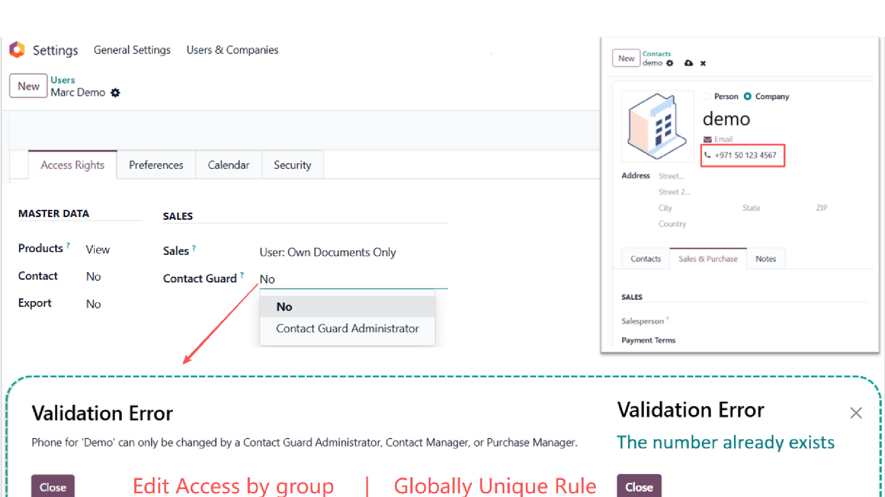
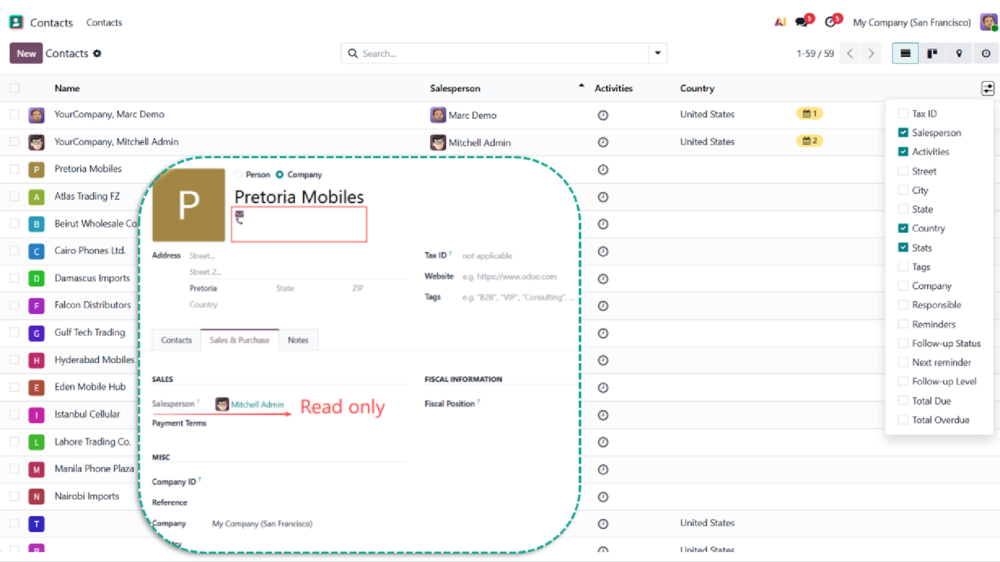
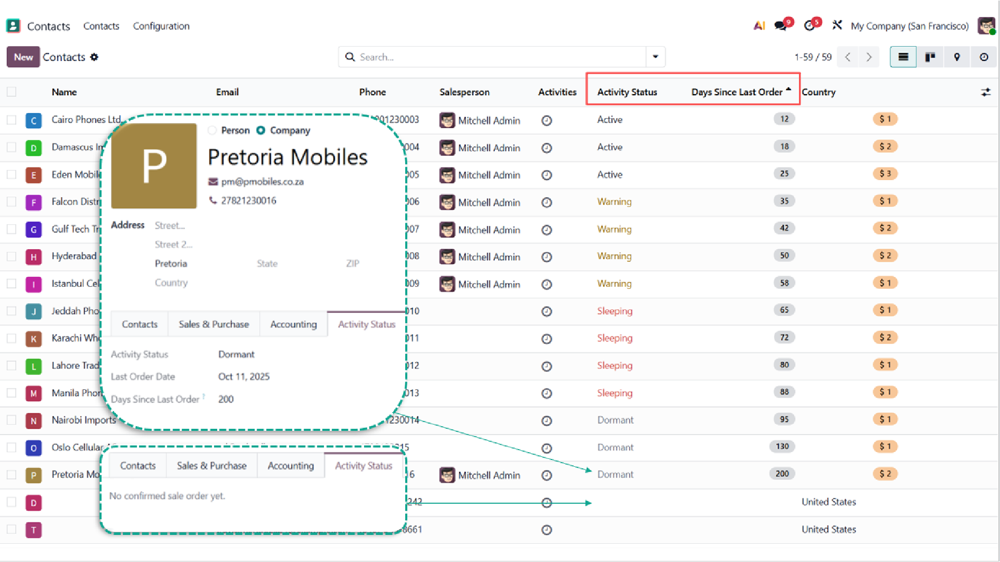
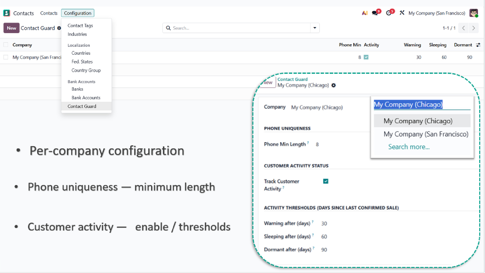

Contact Guard adds three independent governance layers on
res.partner:
All features are configured per company. None introduce database-level constraints; enforcement happens at the ORM, field, or view layer depending on the rule.
This module is designed around the following principles. They explain the technical decisions in subsequent sections.
res.partner records. Restricting
partner read access via ir.rule is not used.groups=,
ORM write hooks, and view-level groups=.
Phone numbers are normalized to digits-only (stripping +,
leading 00, spaces, dashes, parentheses) and stored in
an indexed field for duplicate detection.
When a contact is created or its phone field updated with a value already present in the same company, the operation is rejected with an error message identifying the conflicting number.
The check is bypassed in the following scenarios:
env.su (system automation, migrations, lead-to-contact sync)import_file context)suite_skip_phone_check context flagThe minimum digit length is configurable per company. Default: 8.

Phone, email, and salesperson visibility are gated by role. Once a contact has an assigned salesperson, the phone and email fields become accessible only to the assigned salesperson and to administrators. Contacts without an assigned salesperson remain accessible to all internal users.
The salesperson field can be set freely on contact creation (supporting CRM lead-to-contact conversion that carries the lead's salesperson). After creation, only Contact Guard Administrators can reassign the salesperson.
Phone edit protection is enforced at the ORM layer. The protection applies to all code paths including web UI, RPC calls, scripts, and automated actions.

When enabled per company, a daily cron computes each customer's activity status from the date of their last confirmed sale order:
| Status | Condition |
|---|---|
| Active | days since last order < warning threshold |
| Warning | warning ≤ days < sleeping |
| Sleeping | sleeping ≤ days < dormant |
| Dormant | days ≥ dormant |
| Blank | no confirmed sale order on record |
The blank status is tracked via a separate suite_has_orders
boolean so that "0 days since order" (just placed) and "never ordered"
remain distinguishable in views.
Thresholds are configurable per company. The status is displayed on the contact form (Activity Status tab) and the contact list (with colour decoration: yellow for Warning, red for Sleeping, muted grey for Dormant). It is available for filtering and grouping.
The cron processes customers in batches of 1000 with chatter notifications suppressed.

| Role | Group | Source |
|---|---|---|
| Contact Guard Administrator | suite_contact_guard.group_contact_guard_admin |
Added by this module |
| Sales Manager | sales_team.group_sale_manager |
Native; implies Contact Guard Admin |
| Contact Manager | base.group_partner_manager |
Native |
| Purchase Manager | purchase.group_purchase_manager |
Native |
| Purchase User | purchase.group_purchase_user |
Native |
| Salesperson of the contact | partner.user_id == self.env.user |
Per-record relationship |
The Sales Manager group implies Contact Guard Administrator (one-way implication). Granting Contact Guard Administrator alone does not grant Sales Manager privileges. This allows assigning Contact Guard Administrator to roles outside the sales hierarchy without granting Sales Manager privileges.
In the table below, Salesperson means the user assigned as salesperson on that specific contact. SM/CGA means Sales Manager or Contact Guard Administrator (equivalent for Contact Guard operations).
| Operation | Internal User | Salesperson of contact | Purchase Manager | Contact Manager | SM / CGA |
|---|---|---|---|---|---|
| See phone/email column in list and kanban | No | No | No | Yes | Yes |
| See phone/email on form (contact has no salesperson) | Yes | - | Yes | Yes | Yes |
| See phone/email on form (contact has salesperson) | No | Yes | No | Yes | Yes |
| First-time fill of phone (was empty) | Yes | Yes | Yes | Yes | Yes |
| Edit existing phone (no salesperson) | No | No | Yes | Yes | Yes |
| Edit existing phone (with salesperson) | No | No | No | Yes | Yes |
| Set salesperson on contact creation | Yes | Yes | Yes | Yes | Yes |
| Change salesperson on existing contact | No | No | No | No | Yes |
| See Activity Status (form tab and list columns) | No | No | No | Yes | Yes |
The module enforces these rules at three layers:
res.partner.write.
Applies to web UI, RPC, scripts, and automated actions.
Bypassed only by env.su, import_file
context, suite_skip_phone_check context, or for
public/portal users.groups= — Activity Status
fields (suite_last_order_date,
suite_days_since_order,
suite_activity_status,
suite_has_orders) carry groups= on
the model. The ORM strips them from search_read,
read, exports, and API calls for unauthorized
users.groups= — List columns,
kanban card sections, and form pages with groups=
are removed from the view arch on the server before being sent
to the client.
Phone and email visibility on the contact form is controlled
by an invisible= expression rather than field-level
groups=. This is a deliberate design choice. The native
Odoo phone and email fields do not carry
model-level groups, and adding model-level
groups to them would break compatibility with every
other module that reads these fields (CRM, Sales, Accounting,
WhatsApp, etc.).
The practical implication:
groups= on the column, which strip data on the
server side. Column-level hiding is data-tight.invisible=. The field
values are sent to the client and hidden by the UI. A
technically capable user (browser DevTools, custom RPC client)
can read the values.Deployments requiring data-tight protection on the form must use record rules instead of this module. The trade-off is documented in the next section.
Two technical approaches can implement contact privacy in Odoo:
restricting record visibility via ir.rule on
res.partner, or restricting field visibility via
field-level groups= and ORM hooks. This module uses the
latter. The comparison documents the technical differences.
| Aspect | Record rule on res.partner | Field-level + ORM hooks (this module) |
|---|---|---|
| Phone/email column hiding in lists and kanban | Yes | Yes (server-side stripping via field groups=) |
| Phone/email value hiding on form | Data-tight (record not loaded) | UI-level via invisible= |
| Salesperson opens own quotation referencing partner | Requires OR clauses on partner_invoice_id, partner_shipping_id |
Works without modification |
User login (res.users self-reference) |
Requires explicit self-reference carve-out | Works without modification |
Multi-company partner (companion of res.company) |
Requires explicit OR clause |
Works without modification |
| Chatter, followers, activity assignment on partner-related records | Requires carve-outs to prevent Implicitly accessed through 'Users' errors |
Works without modification |
| Cross-team partner access (Accounting, Warehouse, Purchase, HR) | Restricted to record owners; each cross-team workflow requires per-team carve-outs | Unrestricted; partner records remain readable while phone/email/salesperson are gated by role |
| Maintenance after Odoo upgrades or new module installation | Carve-outs may require re-validation when related models add new partner references | Stable; relies on Odoo APIs (groups=, invisible=, write hooks) that have remained stable across versions |
In typical Odoo deployments, the partner record is referenced by multiple modules:
The field-level approach used in this module preserves cross-team partner access. Accounting users continue to access invoice addresses. Warehouse users continue to access delivery addresses. Purchase users continue to access vendor records. The protected fields — phone, email, salesperson — are gated by role independently of partner record access.
In native Odoo, the company_id field on the contact
form is hidden from single-company users, and Odoo defaults it to
blank, which makes the contact globally visible across companies.
This module injects the user's active company as the default
company_id on contact creation, so single-company
deployments get the same per-company scoping that multi-company
deployments configure manually.
The injection is suppressed when the contact is being auto-created
as the companion partner of a new res.company. In that
case, Odoo's native flow assigns the correct company id, and the
injection would otherwise overwrite it with the current active
company's id, breaking downstream routing for the new company.
Configuration is located at Contacts → Configuration → Contact Guard (visible to System Administrators).
Protection features are active by default and do not require a configuration record. Phone uniqueness, field permissions, and salesperson lock activate when the module is installed. Configuration is only required to tune parameters or enable activity tracking.
| Feature | Default state | Configurable parameters |
|---|---|---|
| Phone uniqueness | On | Minimum digit count (default 8) |
| Field permissions (phone / email / salesperson) | On | None; behaviour is fixed by role |
| Customer activity status | Off | Enable cron, Warning / Sleeping / Dormant thresholds |
Per-company settings:
| Setting | Default | Description |
|---|---|---|
| Phone Min Length | 8 | Minimum digit count after normalization |
| Track Customer Activity | Off | Enables the daily activity cron for the company |
| Warning after (days) | 30 | Threshold for Warning status |
| Sleeping after (days) | 60 | Threshold for Sleeping status |
| Dormant after (days) | 90 | Threshold for Dormant status |
Thresholds must satisfy 0 < warning < sleeping < dormant.

contacts, mail,
sales_team, sale,
purchase (all standard Odoo modules)Released under LGPL-3.0. Maintained by SuiteState. Source repository: github.com/SuiteState/community. Website: suitestate.com.